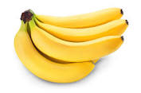

Een banaan is een langwerpige, licht gebogen vrucht, die afkomstig is van de
bananenplant. In Suriname spreekt men van bacove als het om de vrucht gaat die
rechtstreeks uit de schil gegeten kan worden en van banaan als het om groene
bakbananen gaat. In Indische gerechten wordt de banaan meestal pisang genoemd,
het Maleise woord voor de vrucht. Ook in het Afrikaans kent men dat woord,
maar dan gespeld als piesang.